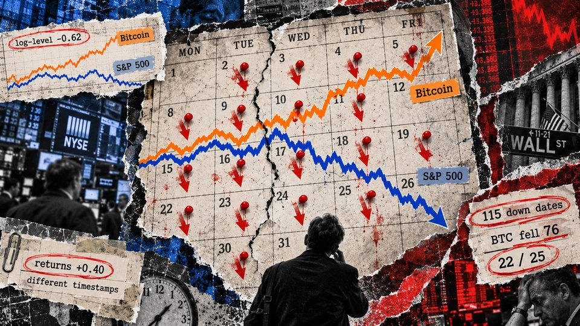
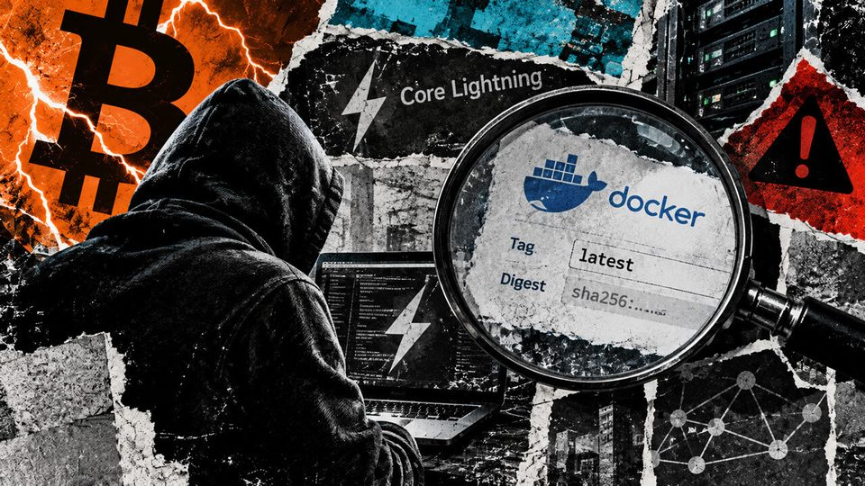
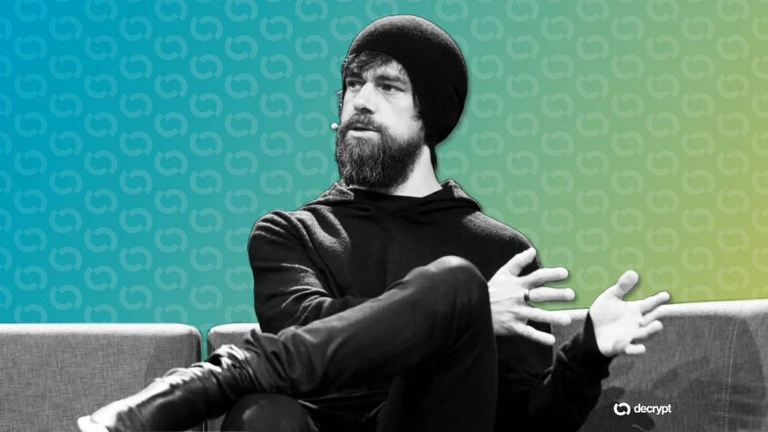
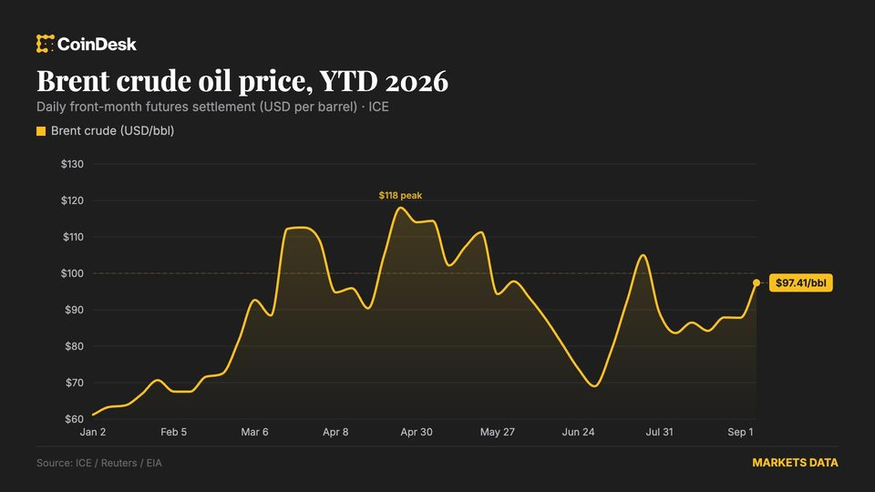
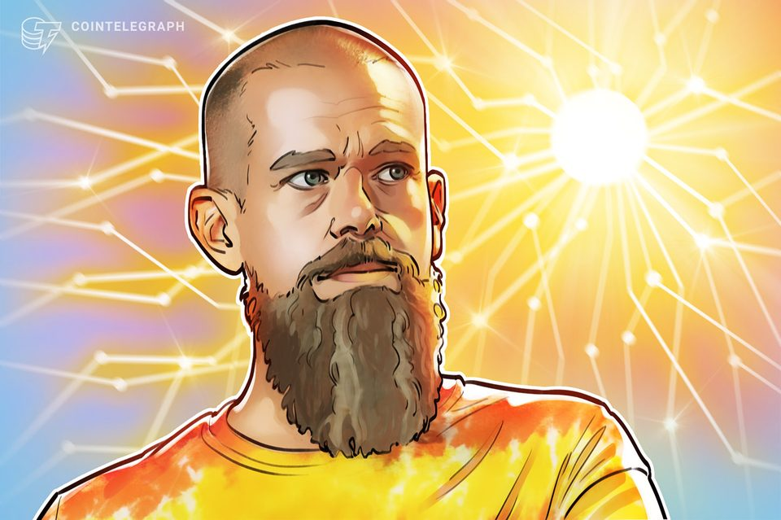

Bitcoin just hit a decade-low S&P 500 correlation, but the daily data tells a different story
Bitwise’s negative trend measure coexists with positive return correlation in a FRED proxy, while portfolio results change across lookbacks. The post Bitcoin just hit a decade-low...

Mexico Seizes 300 Crypto Mining Rigs Wired Into a Hydroelectric Dam
Forensic accountants are tracing who paid for the mining hardware, and money laundering has not been ruled out.
India's financial intelligence unit flags 15 crypto platforms for AML lapses
India's financial intelligence unit flags 15 crypto platforms for AML lapses
Iran eases currency rules to bypass US sanctions with crypto: Report
Exporters can now fund imports with overseas earnings without first selling their foreign currency at official rates, the Financial Times reported.

Bitcoin Core Lightning Docker bug leaves node operators exposed despite showing updated version
Four tags served images that reported v26.06.7 without its fixes, prompting digest checks before planned source disclosure. The post Bitcoin Core Lightning Docker bug leaves node...

Jack Dorsey's Block Applies for Bank Charter to Custody Bitcoin
Builders Bank would consolidate custody work Block now runs under more than 50 state money transmitter licenses.

Live updates: Brent crude hits $100 for first time since July as bitcoin holds above $79,000
Live updates: Brent crude hits $100 for first time since July as bitcoin holds above $79,000

Jack Dorsey's Block seeks US trust bank charter for Bitcoin, stablecoin
The proposed Builders Bank would offer federally supervised digital asset custody but would not accept deposits or issue loans.
Crypto lobbies launch a last-minute TV campaign against banks to pass the CLARITY Act
The crypto industry is launching a seven-figure national advertising campaign to rescue the CLARITY Act ahead of a crucial Senate vote next week. The Senate is scheduled to vote...

OpenAI Says It Solved a $1M Math Problem. A Rival Mathematician Says He Did It First
NYU's Tristan Buckmaster accuses OpenAI's Sébastien Bubeck of racing to claim credit for a Navier-Stokes proof after learning about his unpublished work with Anthropic's Levent...
Anthropic researcher quits with a warning on AI that echoes 'The Terminator' script
Anthropic researcher quits with a warning on AI that echoes 'The Terminator' script

Here's what happened in crypto today
Need to know what happened in crypto today? Here is the latest news on daily trends and events impacting Bitcoin price, blockchain, DeFi, Web3 and crypto regulation.